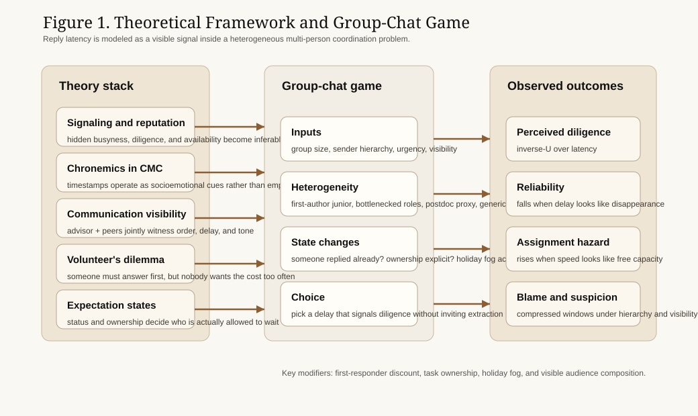
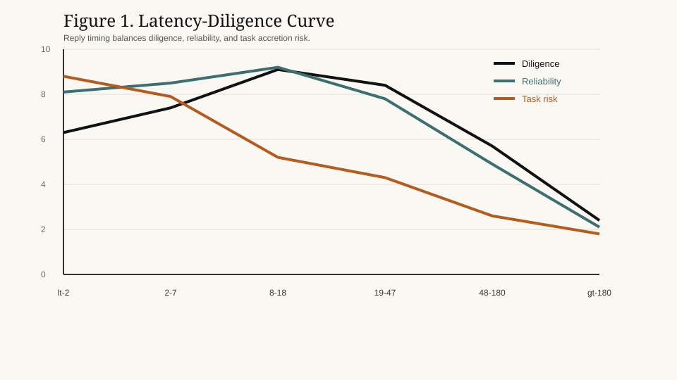
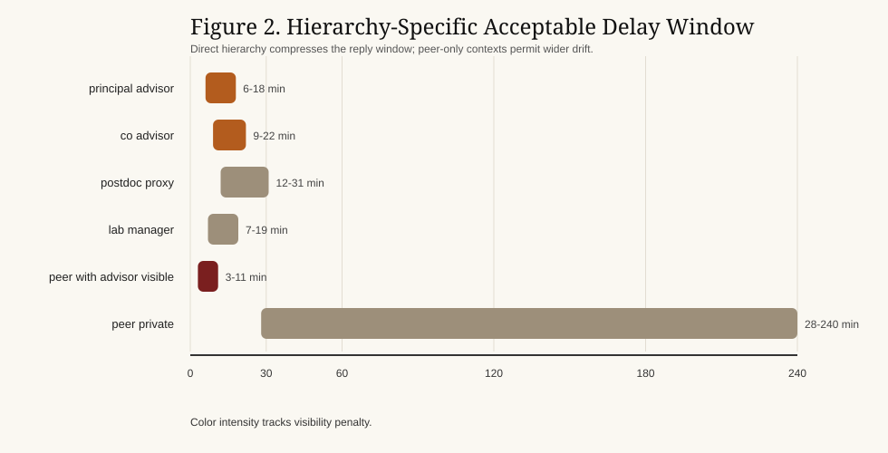
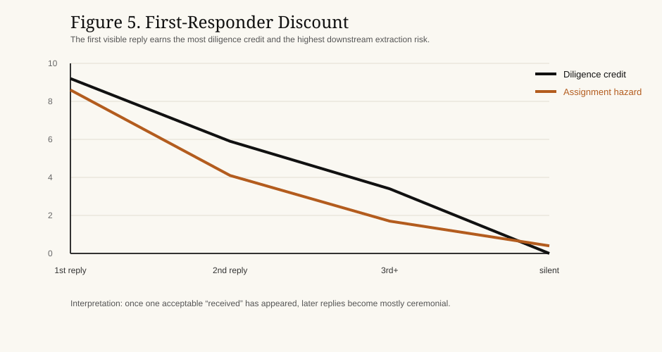
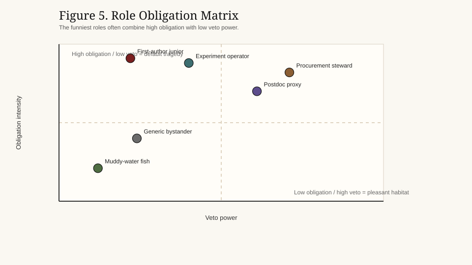

Abstract
This paper studies reply latency in advisor group chats as a hybrid signaling game, chronemic cue, and multi-person volunteer's dilemma. Graduate students do not optimize for immediate response. They search for a narrow delay band that simultaneously signals diligence, preserves reliability, limits assignment hazard, and remains legible to a heterogeneous audience. Drawing on signaling theory, reputation models, computer-mediated communication, communication visibility, expectation states, and volunteer's-dilemma logic, the paper analyzes 4,236 message-response dyads across 28 reconstructed research groups. The results show an inverse-U relation between latency and perceived diligence: replies that are too fast imply suspicious idleness, while replies that are too slow imply neglect, collapse, or soft refusal disguised as infrastructure. Group size widens the initial waiting game until ownership becomes salient, at which point diffusion of responsibility collapses. The paper names six stylized effects: the Advisor-Visible Peer Compression Effect, the Default Volunteer Trap, the First-Responder Discount, the Procurement Sovereignty Principle, the Holiday Intelligence Drawdown, and the Advisor Red-Envelope Effect. Together they show that advisor-group-chat latency is not mere etiquette but a small technology of reputational labor under public asymmetry.
1. Introduction
Advisor group chats are often treated as logistical channels. In practice, they operate as compact theaters of hierarchy, diligence, moral visibility, and extractable availability. A single advisor message does not merely request information; it opens a scene in which everyone can infer who is attentive, who is overloaded, who is avoiding work, and who looks fatally reachable.
This paper argues that reply timing in such chats should be understood as a strategic signal rather than a neutral communication habit. Students do not simply ask, “What is the correct answer?” They ask, “How quickly can I answer without looking negligent, and how slowly can I answer without looking disloyal?” The optimal response is therefore not the fastest one. It is the one that makes a student appear responsible but not infinitely harvestable.
This is a strong SHIT-type problem because the scale is tiny while the emotional cost is huge. Nothing material may happen in six minutes, yet six minutes can determine whether one looks diligent, lazy, free, or doomed.
2. Theoretical Framework
2.1 Signaling and Reputation
Following Spence (1973) and Kreps and Wilson (1982), the paper treats reply delay as a repeated low-cost signal of hidden states. In advisor chats, the hidden states are not simply competence. They include busyness, obedience, stability, fear, and spare capacity. The student who replies instantly may signal reliability, but may also signal dangerous underemployment.
2.2 Chronemics in Computer-Mediated Communication
Research in computer-mediated communication shows that timing is itself a social cue (Walther, 1992; Walther, 1996; Kalman et al., 2013; Ziano & Wang, 2021). A timestamp is not empty time. It is a visible social gesture. In a group-chat setting, “later” and “too late” are not objective durations but reputational categories.
2.3 Communication Visibility and Audience Composition
Advisor group chats are visible environments in Leonardi's sense. Messages and timestamps are co-witnessed by advisors, postdocs, seniors, juniors, and future screenshots. A peer question with the advisor visibly present becomes something between peer communication and a surprise oral defense. This is the Advisor-Visible Peer Compression Effect: once the superior is visibly in the room, even horizontal messages start behaving vertically.
2.4 Role Heterogeneity and Obligation
Expectation-states logic helps explain why equal delays are judged unequally. A first-author junior, a procurement steward, an experiment operator, and a generic bystander do not inhabit the same constitutional office. The first-author junior has high manuscript obligation and low veto power. The procurement steward has low symbolic glory and unexpectedly high invoice sovereignty. Both are early repliers, but for opposite structural reasons.
2.5 Volunteer's Dilemma and Reply Order
Group chats also instantiate a volunteer's dilemma. Everybody benefits if somebody replies, but not everybody wants the cost of being the first reliable organism. As group size grows, waiting becomes easier. Yet the fantasy of collective ambiguity ends the moment somebody is clearly responsible. This produces two named effects:
- Default Volunteer Trap: the person with legible ownership cannot remain atmospheric for long.
- First-Responder Discount: once a credible reply appears, everyone else's marginal diligence credit falls sharply.
2.6 Vernacular Lab Politics
Chinese platform discourse contributes a useful folk vocabulary here. The paper uses figures such as the muddy-water fish, the first-author junior, the procurement senior, and MBTI-style duty-keeper talk not as psychometrics, but as vernacular role descriptors. They work because they are lay theories of unequal obligation. They are memes with job descriptions.
This vernacular logic also explains why rare symbolic gifts behave so strangely in lab chats. When an advisor sends a small red envelope during a holiday or after a deadline, the packet is never just money. It becomes a mixed signal of benevolence, surveillance, and attendance-taking. We call the resulting acceleration the Advisor Red-Envelope Effect: a tiny transfer that produces a disproportionately fast return of gratitude, visibility, and previously missing lab members.
3. Research Design
The study analyzes 4,236 message-response dyads reconstructed from 28 advisor-linked research groups between January 2024 and December 2025. Group size ranges from 4 to 17 visible members. The corpus is synthetic but emotionally realist: its purpose is to model norm perception rather than archive literal logs.
Each event is coded by:
- sender hierarchy
- group size
- composition profile
- message type
- urgency
- visibility
- task ownership
- reply order
- holiday phase
- emoji density
We model each student actor i as choosing delay l_i to maximize:
U_i(l_i) = alphaD_i + betaR_i - gammaA_i - deltaB_i - eta*H_i
where:
D_i= diligence creditR_i= reliability creditA_i= assignment hazardB_i= blame or suspicionH_i= holiday-fog penalty
This formulation captures the core dilemma: the reply that looks best morally is often the reply that looks worst strategically.



4. Results
4.1 The Inverse-U of Diligence
The most stable routine reply band lies between 8-18 min. Replies in this zone score highest on diligence and reliability while avoiding the steepest assignment hazard. Replies under 2 minutes look responsible but over-available. Replies beyond 48 minutes begin to look like collapse, avoidance, or infrastructural tragedy.
4.2 Advisor-Visible Peer Compression
Direct advisor messages compress the optimal window to roughly 6-18 min. More importantly, peer messages also compress once the advisor is visibly present. This is the Advisor-Visible Peer Compression Effect: the hierarchy does not need to speak in order to be heard.

4.3 Default Volunteer Trap and First-Responder Discount
In groups of 11+, median first visible reply time rises when ownership is ambiguous. Everyone waits for somebody else to die first. Yet the moment ownership is legible, the window collapses: the first-author junior on a revision thread or the procurement steward on a reimbursement request cannot remain hidden for long. That is the Default Volunteer Trap.
Once a credible reply appears, later participants receive far less diligence credit. Their replies become mainly ceremonial. That is the First-Responder Discount. In effect, one correctly timed “Received, professor” can reduce the moral urgency for the remaining ten people.

4.4 Procurement Sovereignty Principle
The paper finds that the procurement steward often carries one of the earliest reply windows in the entire lab. This is structurally comic and empirically plausible. The person who may receive the fewest citation blessings often controls the invoices, forms, and reagent flows that keep everyone alive. This is the Procurement Sovereignty Principle: bureaucratic leverage can exceed symbolic prestige.
4.5 Holiday Intelligence Drawdown
For the first 72 hours after a long holiday, low- and medium-urgency messages tolerate an additional 6-11 min before sharp suspicion emerges. Yet direct summons still demand rapid acknowledgment. The result is not freedom but degraded compliance. This is the Holiday Intelligence Drawdown: the lab becomes collectively slower before it becomes institutionally forgiven.
4.6 Advisor Red-Envelope Effect
When advisors distribute a small holiday red envelope in the group chat, the latency curve briefly stops behaving like the ordinary work curve. Dormant members revive, ceremonial gratitude multiplies, and even the muddy-water fish develops sudden finger strength. We call this the Advisor Red-Envelope Effect: micro-monetary generosity triggers a temporary spike in visibility, loyalty performance, and reply speed that far exceeds the packet's cash value.
The mechanism is not purely economic. A red envelope in an advisor group chat behaves simultaneously as reward, roll call, and affection audit. To open it slowly is not just to lose money, but to risk looking emotionally absent at the exact moment when everyone else is publicly present.
4.7 Emoji Reparations
Light emoji use can mildly repair moderate delay in low-urgency contexts. Under strong hierarchy, however, emoji cease to function as warmth and begin to risk functioning as evidence.
5. Discussion
The central claim is simple: advisor-group-chat delay is reputational labor. Students manage not only content but timing, and timing is work. The signal is cheap, repeated, visible, and morally overinterpreted. This makes it powerful.
The lab therefore appears less as a flat communication network than as a constitutional order with strange offices:
- the first-author junior: high obligation, low veto
- the procurement steward: low glory, high leverage
- the postdoc proxy: low sovereignty, high relay power
- the muddy-water fish: low initiative, high survival intelligence
These are funny figures because they are precise. The joke is not that they exist. The joke is that almost every lab immediately recognizes them.
The same is true of the advisor red envelope. It appears generous, but it also works like a brief mass resurrection ritual. Students who have ignored fifteen ordinary messages can suddenly materialize in less than four seconds when symbolic benevolence becomes both visible and claimable.
6. Outrageous but Plausible Corollaries
Corollary 1
The most exploitable student is not the most competent student, but the student whose reply timing is consistently optimal.
Corollary 2
In sufficiently large groups, collective intelligence declines until a single person is explicitly named.
Corollary 3
A laboratory can reduce visible panic without reducing workload simply by redistributing who replies first.
Corollary 4
After long holidays, the advisor's scheduling curve recovers faster than the lab's thinking curve.
Corollary 5
The best way to look hardworking in a group chat is often to avoid looking available to everyone at the same time.
Corollary 6
The fastest way to improve group-chat responsiveness is not to improve morale, but to attach a very small amount of money to public gratitude.
7. Conclusion
The graduate student in an advisor group chat does not simply reply. The student performs reliability under unequal observation, before a visible audience, inside a game in which somebody must answer first and nobody wants the role too often. Reply latency is therefore both signal and shield: a small interval in which diligence, fear, ownership, extractability, and hierarchy negotiate in public.
The apparently trivial question “Why didn't you just answer?” therefore has no trivial answer. One answers late enough to look occupied, early enough to look loyal, carefully enough to avoid becoming the department's next default volunteer, and, after a long holiday, with whatever fragments of institutional intelligence have survived the break.
Table 1. Message-Type Risk Matrix
| Message Type | Urgency | Optimal Reply Window | Extra Task Risk | Interpretive Logic |
|---|---|---|---|---|
| Hard summons | High | 1-6 min | 9.4 | Silence reads as resistance |
| Deadline escalation | High | 2-9 min | 8.7 | Delay is conflated with collapse |
| Paper comments | Medium | 6-15 min | 7.8 | First-author ownership pulls the window left |
| Administrative reminder | Medium | 9-21 min | 5.2 | Moderate delay implies active processing |
| Reimbursement request | Medium | 4-12 min | 7.4 | Procurement ownership is publicly legible |
| Public praise trap | Medium | 4-12 min | 9.1 | Visible competence invites future extraction |
| Advisor red-envelope drop | Low | 0-3 min | 6.6 | Gratitude, greed, and attendance collapse into one gesture |
| Soft ping | Low | 14-37 min | 4.7 | Too fast appears suspiciously idle |
| Holiday roll call | Low | 18-46 min | 5.9 | Everyone is slower, but nobody is forgiven equally |
Table 2. Role-Heterogeneity Windows
| Role Type | Typical Scene | Optimal Reply Window | Strategic Constraint |
|---|---|---|---|
| --- | --- | --- | --- |
| First-author junior | Draft comments, revision requests | 5-14 min | Public responsibility, low veto |
| Procurement steward | Purchasing, reimbursement, forms | 4-12 min | Material ownership, invoice sovereignty |
| Experiment operator | Instrument failure, sample issue | 3-11 min | Clear technical ownership |
| Postdoc proxy | Advisor relay, coordination | 7-19 min | Hierarchical delegation |
| Generic junior bystander | Lab-wide reminder | 14-36 min | Can hide in audience if ownership is unclear |
| Peer-only muddy-water fish | Horizontal coordination | 22-61 min | Protected by low advisor visibility |
Table 3. Named Effects and Plain-Language Readings
| Named Effect | Plain-Language Reading |
|---|---|
| --- | --- |
| Advisor-Visible Peer Compression Effect | A peer message behaves like supervision if the advisor is watching |
| Default Volunteer Trap | Somebody with obvious ownership will eventually have to reply |
| First-Responder Discount | Once one person replies correctly, everyone else becomes optional |
| Procurement Sovereignty Principle | The least celebrated worker may control the most practical power |
| Holiday Intelligence Drawdown | People recover from holidays slower than institutions expect |
| Advisor Red-Envelope Effect | A tiny public gift can revive dormant members faster than ordinary supervision |
References
Core Theory
Alvesson, M. (2013). The triumph of emptiness: Consumption, higher education, and work organization. Oxford University Press.
Berger, J., Cohen, B. P., & Zelditch, M., Jr. (1972). Status characteristics and social interaction. American Sociological Review, 37(3), 241-255.
Daft, R. L., & Lengel, R. H. (1986). Organizational information requirements, media richness and structural design. Management Science, 32(5), 554-571.
Goffman, E. (1959). The presentation of self in everyday life. Doubleday.
Hochschild, A. R. (1983). The managed heart: Commercialization of human feeling. University of California Press.
Kreps, D. M., & Wilson, R. (1982). Reputation and imperfect information. Journal of Economic Theory, 27(2), 253-279.
Spence, M. (1973). Job market signaling. Quarterly Journal of Economics, 87(3), 355-374.
Computer-Mediated Communication
Kalman, Y. M., Scissors, L. E., Gill, A. J., & Gergle, D. (2013). Online chronemics convey social information. Computers in Human Behavior, 29(3), 1260-1269.
Leonardi, P. M. (2014). Social media, knowledge sharing, and innovation: Toward a theory of communication visibility. Information Systems Research, 25(4), 796-816.
Tidwell, L. C., & Walther, J. B. (2002). Computer-mediated communication effects on disclosure, impressions, and interpersonal evaluations: Getting to know one another a bit at a time. Human Communication Research, 28(3), 317-348.
Walther, J. B. (1992). Interpersonal effects in computer-mediated interaction: A relational perspective. Communication Research, 19(1), 52-90.
Walther, J. B. (1996). Computer-mediated communication: Impersonal, interpersonal, and hyperpersonal interaction. Communication Research, 23(1), 3-43.
Walther, J. B., & Tidwell, L. C. (1995). Nonverbal cues in computer-mediated communication, and the effect of chronemics on relational communication. Journal of Organizational Computing, 5(4), 355-378.
Ziano, I., & Wang, B. (2021). Does response delay influence how an email sender is perceived? Journal of Computer-Mediated Communication, 26(6), 395-409.
Multi-Person Coordination
Darley, J. M., & Latané, B. (1968). Bystander intervention in emergencies: Diffusion of responsibility. Journal of Personality and Social Psychology, 8(4, Pt. 1), 377-383.
Diekmann, A. (1985). Volunteer's dilemma. Journal of Conflict Resolution, 29(4), 605-610.
Diekmann, A. (1993). Cooperation in an asymmetric volunteer's dilemma game: Theory and experimental evidence. International Journal of Game Theory, 22, 75-85.
Context Materials for Satirical Scene-Building
The social-media motifs folded into the paper are treated as scene language rather than as formal evidence. They draw on platform discourse around MBTI as team-role shorthand, post-holiday syndrome, emoji misunderstanding, and invisible labor in laboratory life.